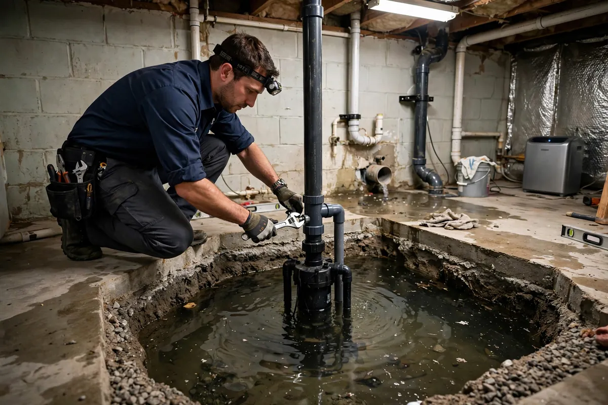

Sump Pump Failure Cleanup in Hollywood, FL
A sump pump has exactly one job, and it usually fails at the worst possible moment — during the storm that was already overwhelming it. Power outages kill electric pumps mid-downpour, float switches stick, intakes clog with silt, and undersized units simply can't keep up with the inflow. Sump pump failure cleanup deals with the aftermath in pits, basements, and crawl spaces: getting the water out, handling what it contaminated, and drying the low areas that stayed wettest longest.

Understanding Sump Pump Failure Cleanup in Hollywood
The cruel timing is the pattern: the pump dies precisely when groundwater pressure is highest, so the pit overflows and water spreads across the lowest floor — exactly where drainage is poorest and evaporation slowest. What comes up is rarely clean, either. Pit water mixes groundwater with silt, sediment, and whatever the pit has collected, making it gray or black category from the start. Finished basements take the worst of it: carpet, pad, drywall, and stored belongings all in the path of the rising water.
There's also a second failure hiding behind the first — the reason the pump quit. A tripped breaker or dead battery backup is fixable; a burned-out motor or a discharge line frozen or crushed is a replacement job. Either way, the cleanup can't wait for the mechanical fix: standing water in a pit keeps wicking into surrounding materials around the clock. The electrical and plumbing side belongs to those trades; our side is everything the water touched.
How We Handle the Job
Power and pump status get checked first — if the pump can be revived quickly, great; if not, portable pumping takes over so water stops spreading. The pit and affected floor areas are extracted, with attention to the silty residue pits leave behind. Because pit water is typically contaminated, affected porous materials are assessed by category: what can be cleaned versus what must go. Then the low areas get what they need most — aggressive airflow and dehumidification with moisture readings, since below-grade spaces dry slowest and hide moisture longest.
We document the waterline and every affected material so you have a clear record. Beyond the immediate cleanup, related work such as emergency water extraction, structural drying, or flood cleanup may be part of the same job — and it's worth asking your electrician or plumber about backup power options before the next storm, not after.
Local Response and Insurance Support
Searching for sump pump failure cleanup near me usually means you need help without delay. We answer emergency calls around the clock. Documentation — photos and moisture readings — supports conversations with your insurance carrier when the loss is sudden and accidental. We do not decide coverage; we provide clear technical information about the work performed.
When to Call
Call if you have active water, wet materials that are not drying, odors after a leak, or a backup that may involve contaminated water. Early action in Hollywood’s climate is almost always less disruptive than waiting. For neighborhood-specific service, see our service areas.
Frequently Asked Questions
Why did my sump pump quit right in the middle of the storm?
The most common causes are power loss, a stuck float switch, a clogged intake screen, or a pump that was undersized for the inflow. Storms deliver all four conditions at once, which is why failures cluster during heavy weather.
Is the water in a sump pit dirty?
Assume yes. Pit water mixes groundwater with silt and sediment, which puts it in the gray or black category. We handle it with contamination protocols, not as if it were a clean leak.
Should I install a battery backup pump?
That's a conversation for your electrician or plumber — they size and install the equipment. Our role is the cleanup after a failure, but a backup system is the single best prevention against a repeat.
How do you dry a basement after the pump failed?
Extraction first, then commercial air movers and dehumidifiers with daily moisture readings. Below-grade areas hold moisture stubbornly, so we monitor until every material verifies dry — surfaces that feel dry often aren't, down there.